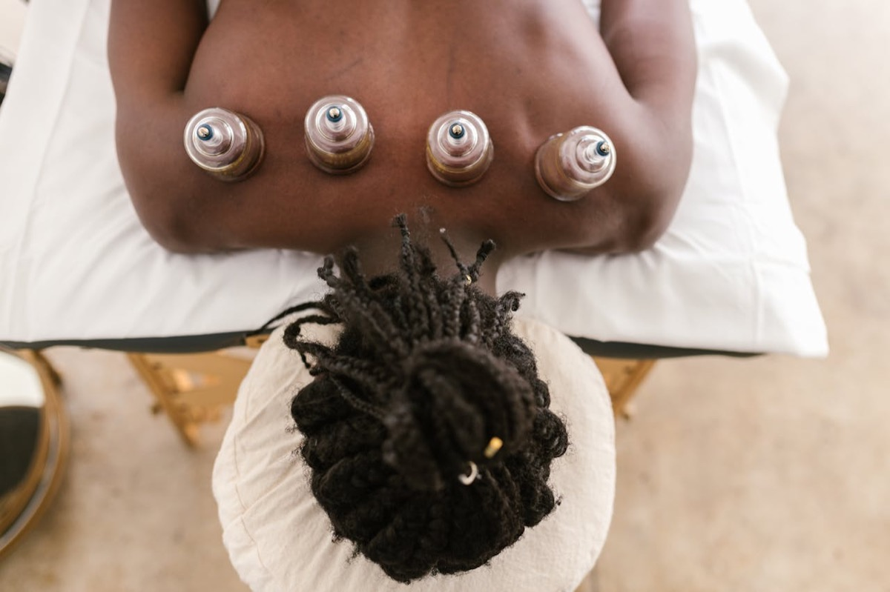
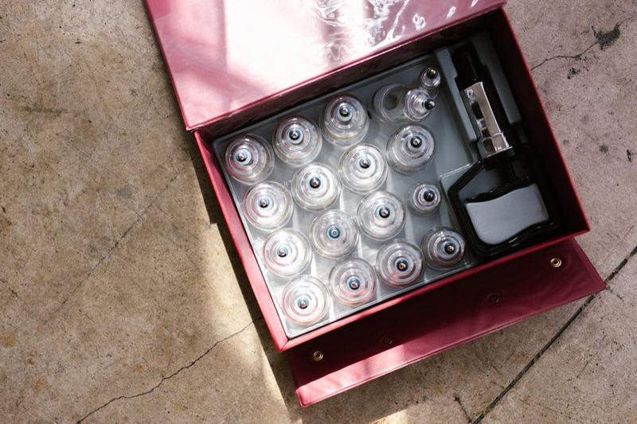
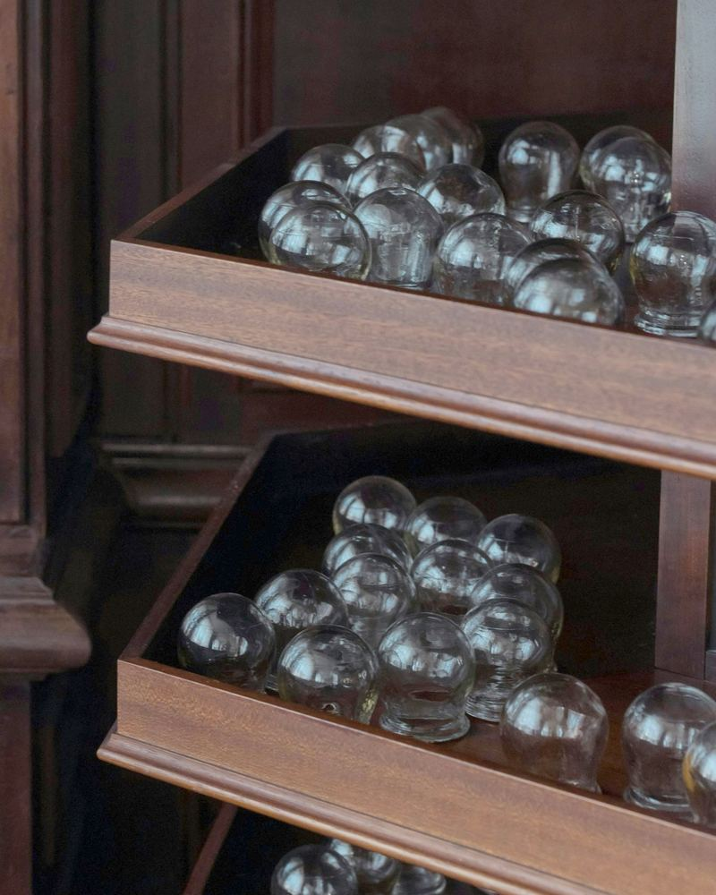

Female practitioner
Women’s cupping
£45 45 minutes
With Sister Aisha Mejri · from £45 · 45 minutes
Book for women
Wet cupping, also known as hijama, for women and men of every faith and background.
Wet cupping · 40–45 minutes£45
Book on Fresha, listed as Sincerity Ruqyah Centre.
Ask on WhatsAppSame-sex practitioners, single-use cups and blades, a proper consultation and written aftercare. Everyone is welcome. Your privacy, comfort and dignity come first.
From £45Standard wet cupping
Same-sex practitionersPrivate appointments
100+ public reviewsAcross Fresha and Google
Open dailyMon–Fri 10:00–19:00
Sat–Sun 10:00–20:30
Choose the right appointment
A private consultation, single-use cups and blades, and written aftercare. Choose your practitioner and see available times on Fresha.
Female practitioner
£45 45 minutes
With Sister Aisha Mejri · from £45 · 45 minutes
Book for womenMale practitioner
£45 40 minutes
With Brother Abu Layla · from £45 · 40 minutes
Book for menCare without assumptions
We explain what will happen, protect your privacy and keep the boundary between complementary care and medical treatment clear.

Blades and cups are used once for one client, then disposed of safely.
Women see Sister Aisha Mejri. Men see Brother Abu Layla.
There is time to ask questions before the session and clear information to take home.
Wet cupping is not a substitute for medical advice, diagnosis or treatment. It can cause marks and other adverse effects; read the independent NCCIH cupping safety information.
A direct answer
Wet cupping is a traditional complementary practice. Cups create suction on the skin, then small superficial openings are made with a single-use blade before the cups are briefly reapplied. We explain each stage before starting and provide written aftercare when the appointment ends.
See cupping options and pricesA direct answer
No. The clinic welcomes women and men from every faith, ethnicity and background. Some people know the practice by its Arabic name, while others simply call it wet cupping. You do not need a religious reason to book, and our same-sex setup is there for privacy and comfort.
More about the clinicA direct answer
Do not eat for at least six hours before your session. Keep drinking water, wear loose clothing and complete the patient form when you book. Afterwards, rest, keep the cupped areas dry for the first 6 to 12 hours and leave hard exercise for two to three days.
How to prepare for hijamaA direct answer
The sunnah days are the 17th, 19th and 21st of each Islamic month. Hijama is still allowed on any other day when you need it. Our guide lists the next sunnah days as UK calendar dates.
See the next sunnah daysChoose your practitioner and pick a time that suits you.
Your visit
Nothing begins until you know what to expect and have had the chance to ask questions.

We discuss the appointment, your comfort and the areas you would like covered.
Your practitioner places the cups and adjusts the suction with your comfort in mind.
The cups are removed, small superficial openings are made, then the cups are briefly reapplied.
The area is cleaned and dressed, and you leave with written aftercare information.
Your practitioners
Sister Aisha sees women. Brother Abu Layla sees men. Private appointments are booked with the appropriate practitioner from the start.
Meet the clinicWomen’s appointments
20 years of experience. Sees women for private appointments.
Men’s appointments
10 years of experience. Sees men for private appointments.
In their words
100+ public reviews across Fresha and Google. Quotes are shown unedited.
Read reviews on Google“Sister Aisha is amazing cupping therapist, she is the best I had a cupping session with.”
“The room was clean with a lock on the door. I found it to be a relaxing experience.”
“The whole process was painless and highly professional.”
One Streatham clinic
Find us at 330 Streatham High Rd, London SW16 6HH, within Sincerity Ruqyah Centre. Coming from a nearby area? Use our travel guides to plan your visit to our one Streatham clinic.
Cupping guides
Plain answers on preparing, aftercare and the sunnah days.
Browse all guidesReady when you are
Women and men book through separate, clearly labelled routes.